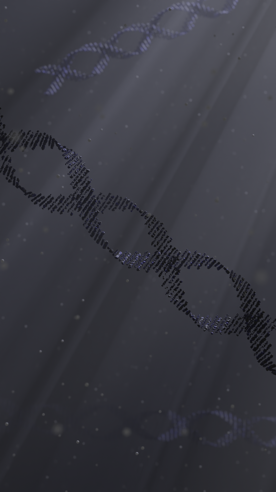
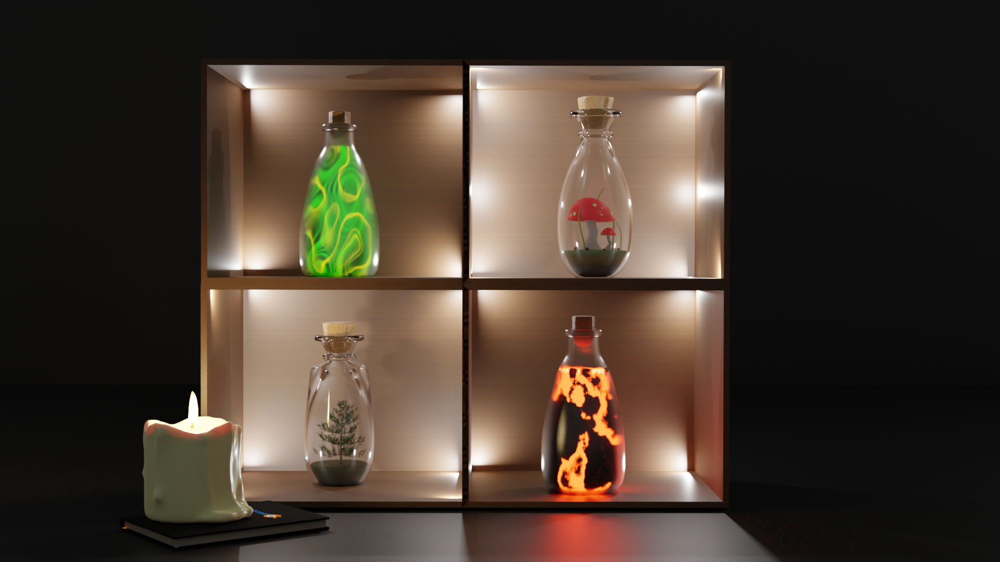
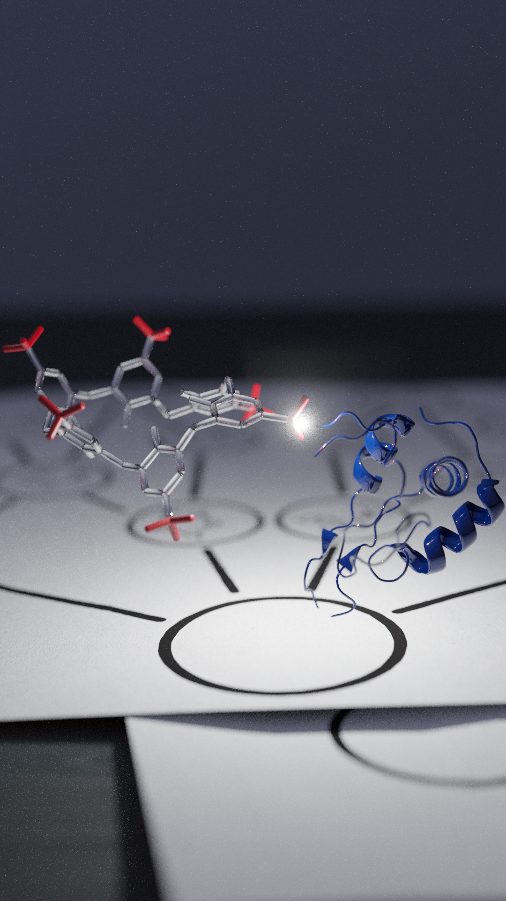

MELISSA FANG
Home

ACS Nano Cover Submission
Lets Go Back Animation
"Spirited Away" Type Face Challenge

Blender Potions

6hah
"Spirited Away" Type Face Challenge
Blender Curves Exercise
JenHo Portrait
JenHo Portrait